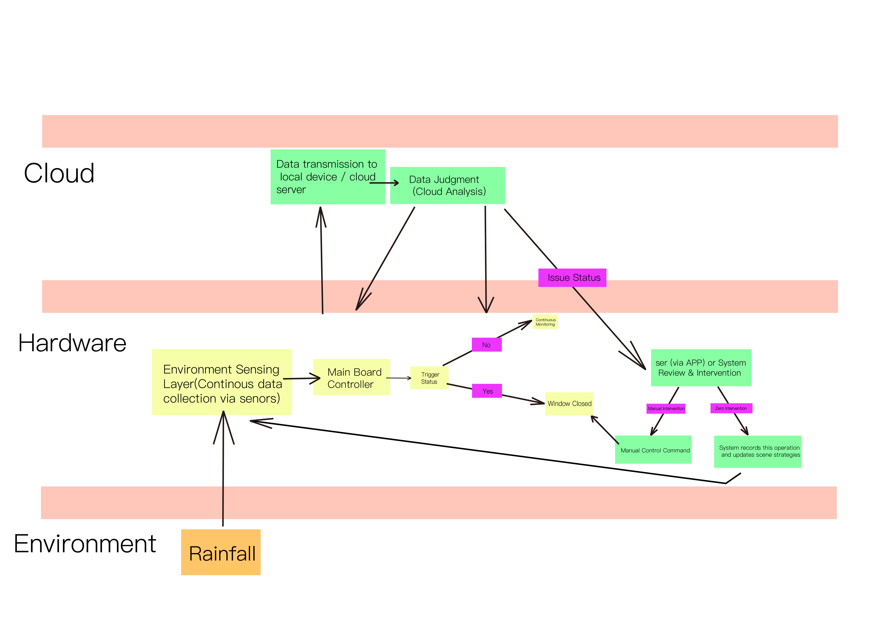
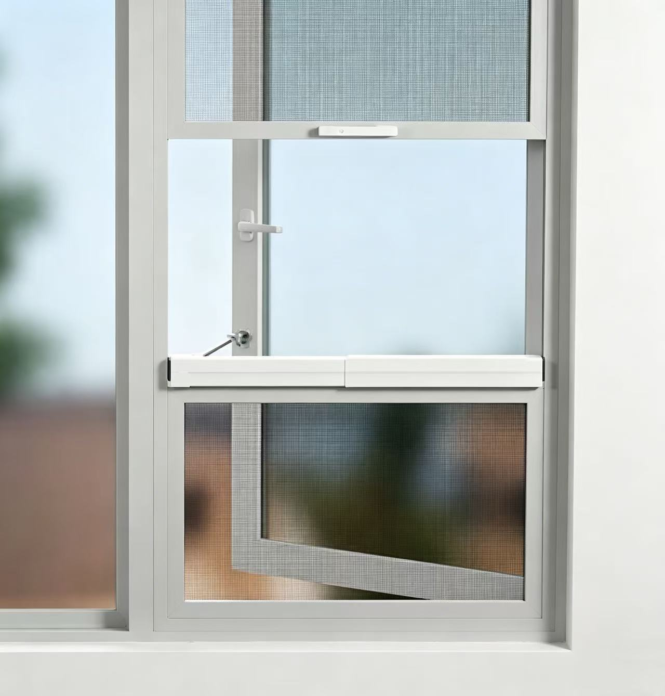
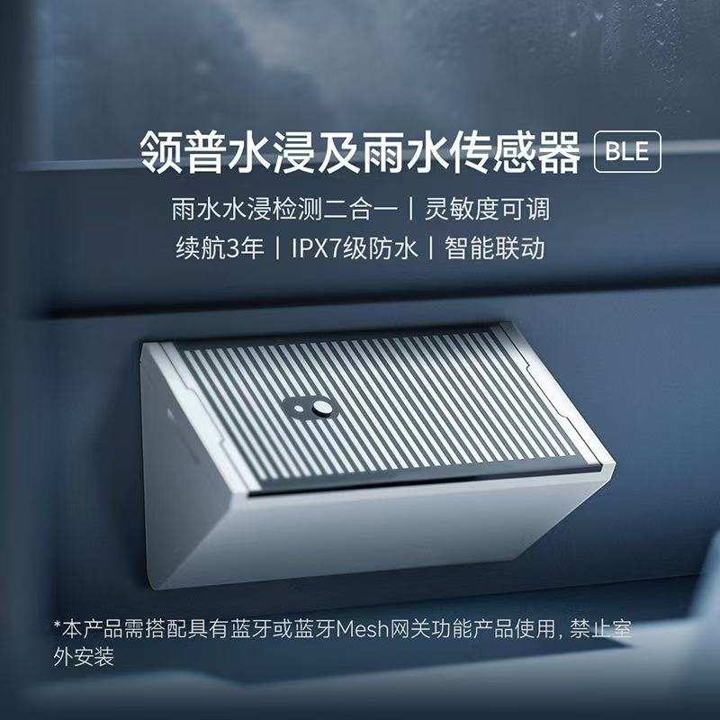
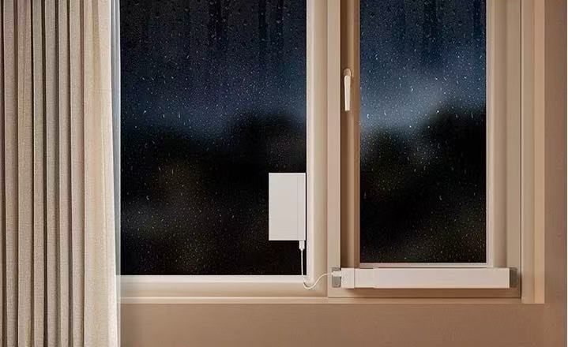

Exercise 6: IoT Project
Smart Window Closer Introduction and Case Study
IoT Project Introduction
Smart Window Closer:
- The smart window closer utilizes Internet of Things (IoT) technology to help users achieve automated window control, enhancing the comfort and safety of living environments. The system uses environmental sensors, intelligent control modules, and remote communication technology to monitor outdoor weather changes and indoor environmental conditions in real-time, automatically executing window opening or closing operations to avoid losses caused by sudden rainstorms or human negligence.
- In the smart window closer, various sensors are installed on the outside of windows or indoors to detect parameters such as raindrops, wind speed, light intensity, and indoor temperature and humidity. When the rain sensor detects rainwater or the wind speed sensor detects strong winds, the system immediately issues a window closing command; meanwhile, indoor air quality sensors (such as CO₂, PM2.5) can also be linked for control, automatically opening windows when ventilation is needed to achieve intelligent indoor environment regulation.
- The control center adopts edge computing or cloud analysis to comprehensively judge sensor data and execute precise actions based on user-preset scene modes (such as away mode, sleep mode, rainy day mode, etc.). In addition, the system supports linkage with smart door locks, security cameras, air conditioners and other devices, such as automatically closing all windows and activating security alerts after leaving home, or automatically opening windows for smoke exhaust during fire alarms, improving emergency response capabilities.
- Users can remotely view the window open/close status through mobile APP or voice assistants, and manually control the opening angle of each window at any time. The system also provides historical records and abnormal alarm functions, allowing users to understand window operation status. Installation is flexible, suitable for both wired wiring in newly renovated houses and wireless battery or solar power solutions for old house renovations.
- The advantages of smart window closers lie in effectively preventing rainwater backflow, reducing air conditioning energy consumption, reducing dust entry, and improving home security levels. It solves the inconvenience of traditional windows relying on manual operation, especially suitable for high-rise residences, villas, offices, and areas with perennial rain or heavy wind and sand. Through intelligent decision-making and automated execution, this product not only improves quality of life but also provides practical solutions for energy conservation, environmental protection, and smart home construction.

Case Study: Linptech WD2 Smart Swing Window Opener
Product Link: https://www.linptech.com/1459221459.html




Summary
This exercise introduces IoT-based smart window closer systems, covering their working principles, sensor integration, intelligent control mechanisms, and practical applications. The case study of Linptech WD2 demonstrates real-world implementation of automated window control technology, showcasing how IoT solutions can enhance home comfort, safety, and energy efficiency.